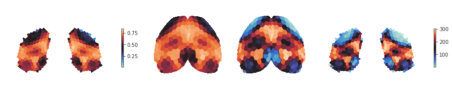

October ??th, 2021¶
Motivation: ??
# HIDE CODE
import os
import sys
import nibabel as nib
import networkx as nx
from time import time
from pprint import pprint
from copy import deepcopy as dc
from os.path import join as pjoin
from myterial import orange, blue_grey
from IPython.display import display, IFrame, HTML
from matplotlib.colors import rgb2hex, to_rgb
import matplotlib.pyplot as plt
import seaborn as sns
# set style & no interpolalation
import matplotlib
matplotlib.rcParams['image.interpolation'] = 'none'
sns.set_style('whitegrid')
%matplotlib inline
# tmp & extras dir
git_dir = pjoin(os.environ['HOME'], 'Dropbox/git')
tmp_dir = pjoin(git_dir, 'jb-Ca-fMRI/tmp')
extras_dir = pjoin(git_dir, 'jb-Ca-fMRI/_extras')
lfr_dir = pjoin(os.environ['HOME'], 'Documents/workspaces/lfr/binary_overlapping')
# GitHub
sys.path.insert(0, pjoin(git_dir, '_Ca-fMRI'))
from register.atlas import Allen
from register.parcellation import Parcellation
from analysis.hierarchical import Hierarchical
from analysis.bootstrap import *
from analysis.svinet import *
from analysis.group import *
from analysis.lfr import *
from utils.render import *
from utils.plotting import *
from model.mouse import Mice
from model.configuration import Config
# warnings
import warnings
warnings.filterwarnings('ignore', category=DeprecationWarning)
from scipy.ndimage import gaussian_filter
def show_h(proj_h, proj_hr, cmap='icefire', interp='antialiased'):
fig, axes = create_figure(1, 4, (13., 3), gridspec_kw={'width_ratios': [1.8, 1, 1, 1.8]})
x2plt = proj_h['parcel2d-flat'].squeeze()
x2plt = gaussian_filter(x2plt, sigma=1)
x2plt = np.ma.masked_where(x2plt < 0.01, x2plt)
im = axes[0].imshow(x2plt, cmap=cmap, interpolation=interp)
plt.colorbar(im, ax=axes[0], shrink=0.4)
x2plt = proj_h['parcel2d-top'].squeeze()
x2plt = gaussian_filter(x2plt, sigma=1)
x2plt = np.ma.masked_where(x2plt < 0.01, x2plt)
axes[1].imshow(x2plt, cmap=cmap, interpolation=interp)
x2plt = proj_hr['parcel2d-top'].squeeze()
x2plt = gaussian_filter(x2plt, sigma=1)
x2plt = np.ma.masked_where(x2plt < 0.01, x2plt)
axes[2].imshow(x2plt, cmap=cmap, interpolation=interp)
x2plt = proj_hr['parcel2d-flat'].squeeze()
x2plt = gaussian_filter(x2plt, sigma=1)
x2plt = np.ma.masked_where(x2plt < 0.01, x2plt)
im = axes[3].imshow(x2plt, cmap=cmap, interpolation=interp)
plt.colorbar(im, ax=axes[3], shrink=0.4)
remove_ticks(axes)
plt.show()
def get_h(pi_arr, approach='pi_animals'):
if approach == 'pi_animals':
pi = bn.nanmean(pi_arr, -3)
pi = bn.nanmean(bn.nanmean(pi, 2), 1)
h = sp_stats.entropy(pi, axis=-2) / np.log(pi.shape[-2])
h = bn.nanmean(h, 0)
hr = sp_stats.rankdata(h)
elif approach == 'avg_pi_first':
pi = bn.nanmean(pi_arr, -3)
pi = bn.nanmean(bn.nanmean(bn.nanmean(pi, 2), 1), 0)
h = sp_stats.entropy(pi, axis=0) / np.log(len(pi))
hr = sp_stats.rankdata(h)
elif approach == 'no_pi_avg':
h_arr = sp_stats.entropy(pi_arr, axis=-2) / np.log(pi_arr.shape[-2])
h = bn.nanmean(h_arr, -3)
h = bn.nanmean(bn.nanmean(bn.nanmean(h, 2), 1), 0)
hr = sp_stats.rankdata(h)
proj_h = gr.project_vec(h)
proj_hr = gr.project_vec(hr)
return h, hr, proj_h, proj_hr
%%time
mice = Mice((192, 4))
CPU times: user 214 ms, sys: 1.6 s, total: 1.82 s
Wall time: 3.42 s
mice.setup_func_data('rest')
props = {
'mice': mice,
'num_k': 6,
'perc': 'p10-sample',
'metric': 'spearman',
'match_metric': 'euclidean',
'match_using': 'gam',
'prepare_data': False,
'verbose': False,
'task': 'rest',
}
Ca2¶
gr = Group(mode='ca2', centroids_from='all', **props)
group_ca = gr.fit_group(skip_align=False)
gr = Group(mode='bold-lite', centroids_from='all', **props)
group_bold = gr.fit_group(skip_align=False)
Warning, nan in global order
Warning, nan in global order
pi = bn.nanmean(group_ca['pi_run'], -3)
pi_ca = bn.nanmean(pi.reshape(-1, *pi.shape[-2:]), 0)
disjoint = gr.get_disjoint_community(pi_ca, to_vec=True)
pi_ca = np.concatenate([pi_ca, np.expand_dims(disjoint, 0)])
proj_ca = gr.project_vec(pi_ca)
pi = bn.nanmean(group_bold['pi_run'], -3)
pi_bold = bn.nanmean(pi.reshape(-1, *pi.shape[-2:]), 0)
disjoint = gr.get_disjoint_community(pi_bold, to_vec=True)
pi_bold = np.concatenate([pi_bold, np.expand_dims(disjoint, 0)])
proj_bold = gr.project_vec(pi_bold)
fig, _ = gr.show(
proj_bold, proj_ca,
labels=('BOLD', 'CA2'),
cmaps=('rocket', 'mako'),
display=False,
)
sup = f"k{props.get('num_k')} / {props.get('perc')}"
sup = fig.suptitle(sup, fontsize=20, y=1.02)
fig
# fig.savefig(
pjoin(tmp_dir, 'communities_svinet_192_5-15.pdf'),
bbox_extra_artists=[sup],
bbox_inches='tight',
)
# fig.savefig(
pjoin(tmp_dir, 'communities_svinet_192_5-15.png'),
bbox_extra_artists=[sup],
bbox_inches='tight',
dpi=200,
)
sv = SVINET(**props, mode='ca2')
msg = f"Ca2 symmetry score\nbold: \t{sv.pi_symmetry_score(pi_bold, 3)}\n"
msg += f"ca2 :\t{sv.pi_symmetry_score(pi_ca, 3)}"
print(msg)
Ca2 symmetry score bold: {1: 0.993, 2: 0.991, 3: 0.989, 4: 0.88, 5: 0.99, 6: 0.847, -1: 0.948} ca2 : {1: 0.974, 2: 0.981, 3: 0.985, 4: 0.987, 5: 0.983, 6: 0.963, -1: 0.979}
h_ca, hr_ca, proj_h, proj_hr = get_h(group_ca['pi_run'], 'pi_animals')
_ = show_h(proj_h, proj_hr)

h_bold, hr_bold, proj_h, proj_hr = get_h(group_bold['pi_run'], 'pi_animals')
_ = show_h(proj_h, proj_hr)

mice.setup_func_data('rest', runs_only=True)
weight = None# 'weight'
deg_ca_all = []
for key in tqdm(mice.ca):
net = Network(mice, key, 'ca2', 'rest', 'spearman').load_network()
deg = nx.degree(net.graphs[10], weight=weight)
deg = dict(deg)
deg = np.array(list(deg.values()), dtype=float)
if not np.abs(deg).sum():
print(key)
continue
deg[deg == 0] = np.nan
deg_ca_all.append(np.expand_dims(deg, 0))
deg_ca_all = np.concatenate(deg_ca_all)
deg_ca = bn.nanmean(deg_ca_all, 0)
deg_ca.shape, deg_ca_all.shape
((302,), (114, 302))
deg_bold_all = []
for key in tqdm(mice.bold):
net = Network(mice, key, 'bold-lite', 'rest', 'spearman').load_network()
deg = nx.degree(net.graphs[10], weight=weight)
deg = dict(deg)
deg = np.array(list(deg.values()), dtype=float)
if not np.abs(deg).sum():
print(key)
continue
deg[deg == 0] = np.nan
deg_bold_all.append(np.expand_dims(deg, 0))
deg_bold_all = np.concatenate(deg_bold_all)
deg_bold = bn.nanmean(deg_bold_all, 0)
deg_bold.shape, deg_bold_all.shape
sub-SLC08_ses-1_run-1
sub-SLC10_ses-2_run-1
((302,), (110, 302))
degr_ca = sp_stats.rankdata(deg_ca)
degr_bold = sp_stats.rankdata(deg_bold)
fig, axes = create_figure(1, 2, figsize=(12, 3))
sns.histplot(deg_ca, kde=True, bins=40, color='g', ax=axes[0])
sns.histplot(deg_bold, kde=True, bins=40, color='r', ax=axes[0])
sns.histplot(degr_ca, kde=True, bins=40, color='g', ax=axes[1])
sns.histplot(degr_bold, kde=True, bins=40, color='r', ax=axes[1])
<AxesSubplot:ylabel='Count'>
fig, axes = create_figure(1, 2, figsize=(12, 3))
sns.histplot(deg_ca, kde=True, bins=40, color='g', ax=axes[0])
sns.histplot(deg_bold, kde=True, bins=40, color='r', ax=axes[0])
sns.histplot(degr_ca, kde=True, bins=40, color='g', ax=axes[1])
sns.histplot(degr_bold, kde=True, bins=40, color='r', ax=axes[1])
<AxesSubplot:ylabel='Count'>
h_ca, hr_ca, proj_h, proj_hr = get_h(group_ca['pi_run'], 'pi_animals')
df_ca = {
'degree': deg_ca,
'degree_rank': degr_ca,
'entropy': h_ca,
'entropy_rank': hr_ca,
'oc_idx': pi_ca[-1].astype(int),
}
df_ca = pd.DataFrame(df_ca)
x = 'entropy'
y = 'degree'
jg = sns.JointGrid(
data=df_ca,
x=x,
y=y,
hue='oc_idx',
size=8,
palette=gr.colors,
xlim=(0.1, 0.9),
ylim=(0, 90),
space=0.0,
)
jg.plot_joint(
sns.scatterplot,
hue='oc_idx',
s=180,
alpha=0.9,
edgecolor='dimgrey',
)
jg.plot_marginals(
sns.kdeplot,
fill=True,
alpha=0.5,
lw=2,
)
_median = bn.nanmedian(df_ca[x].values)
jg.ax_joint.axvline(
x=_median,
ls='--',
lw=2,
alpha=1.0,
c=sns.color_palette('deep')[7],
label=f"{x} median: {_median:.2f}",
zorder=0,
)
_median = bn.nanmedian(df_ca[y].values)
jg.ax_joint.axhline(
y=_median,
ls='--',
lw=2,
alpha=1.0,
c=sns.color_palette('deep')[7],
label=f"{y} median: {_median:.2f}",
zorder=0,
)
jg.ax_joint.legend(loc='upper left', prop={'size': 9})
jg.ax_joint.set_xlabel('Entropy', fontsize=15)
jg.ax_joint.set_ylabel('Degree', fontsize=15)
file = pjoin(tmp_dir, f"carto_scatter_ca2.pdf")
jg.savefig(file)
plt.show()
h_bold, hr_bold, proj_h, proj_hr = get_h(group_bold['pi_run'], 'pi_animals')
df_bold = {
'degree': deg_bold,
'degree_rank': degr_bold,
'entropy': h_bold,
'entropy_rank': hr_bold,
'oc_idx': pi_bold[-1].astype(int),
}
df_bold = pd.DataFrame(df_bold)
x = 'entropy'
y = 'degree'
jg = sns.JointGrid(
data=df_bold,
x=x,
y=y,
hue='oc_idx',
size=8,
palette=gr.colors,
xlim=(0.5, 1),
ylim=(0, 80),
space=0.0,
)
jg.plot_joint(
sns.scatterplot,
hue='oc_idx',
s=180,
alpha=0.9,
edgecolor='dimgrey',
)
jg.plot_marginals(
sns.kdeplot,
fill=True,
alpha=0.5,
lw=2,
)
_median = bn.nanmedian(df_bold[x].values)
jg.ax_joint.axvline(
x=_median,
ls='--',
lw=2,
alpha=1.0,
c=sns.color_palette('deep')[7],
label=f"{x} median: {_median:.2f}",
zorder=0,
)
_median = bn.nanmedian(df_bold[y].values)
jg.ax_joint.axhline(
y=_median,
ls='--',
lw=2,
alpha=1.0,
c=sns.color_palette('deep')[7],
label=f"{y} median: {_median:.2f}",
zorder=0,
)
jg.ax_joint.legend(loc='upper left', prop={'size': 9})
jg.ax_joint.set_xlabel('Entropy', fontsize=15)
jg.ax_joint.set_ylabel('Degree', fontsize=15)
file = pjoin(tmp_dir, f"carto_scatter_bold.pdf")
jg.savefig(file)
plt.show()
Actual boot¶
def do_boot(x, batch, rng):
n_sub, n_ses, n_seed = x.shape[:3]
_sub = rng.choice(
a=n_sub,
size=n_sub * batch,
replace=True,
)
_ses = rng.choice(
a=n_ses,
size=n_sub * n_ses * batch,
replace=True,
)
_seed = rng.choice(
a=n_seed,
size=n_sub * n_ses * n_seed * batch,
replace=True,
)
_sub = np.repeat(_sub, n_ses)
_sub = np.repeat(_sub, n_seed)
_ses = np.repeat(_ses, n_seed)
ids = list(zip(_sub, _ses, _seed))
ids = tuple(zip(*ids))
booted = bn.nanmedian(x[ids].reshape((batch, *x.shape)), -3)
return booted
group_bold['gam_ses'].shape
(10, 3, 500, 6, 302)
%%time
# gam_booted_bold = []
for i in tqdm(range(2000)):
gam_booted_bold.append(do_boot(
x=group_bold['gam_ses'],
batch=5,
rng=get_rng(i),
))
gam_booted_bold = np.concatenate(gam_booted_bold)
gam_booted_bold.shape
CPU times: user 1h 10min 16s, sys: 15min 42s, total: 1h 25min 59s
Wall time: 1h 26min 2s
(10000, 10, 3, 6, 302)
# _ = save_obj(
obj=gam_booted_bold,
file_name=f"gam_boot_BOLD_{now()}",
save_dir=tmp_dir,
mode='npy',
)
[PROGRESS] 'gam_boot_BOLD_(2021_10_29).npy' saved at /home/hadi/Dropbox/git/jb-Ca-fMRI/tmp
gam_booted_bold = np.load(pjoin(tmp_dir, 'gam_boot_BOLD_(2021_10_29).npy'), mmap_mode='r')
pi_booted_bold = gam_booted_bold / np.nansum(gam_booted_bold, -2, keepdims=True)
pi_booted_bold.shape
(10000, 10, 3, 6, 302)
cut_bold = np_nans((
10, 3, len(pi_booted_bold), gr.num_k, len(gr.bins) - 1,
))
for i in tqdm(range(10)):
for j in range(3):
_oc, _ = cut_data(pi_booted_bold[:, i, j], gr.bins, oc_only=True)
cut_bold[i, j] = _oc
cut_bold.shape
(10, 3, 10000, 6, 4)
cut_bold = bn.nanmean(bn.nanmean(cut_bold, 1), 0)
cut_bold.shape
(10000, 6, 4)
fig, axes = create_figure(2, 3, (8, 4))
for i, ax in enumerate(axes.flat):
data = cut_bold[:, i, -1]
sns.kdeplot(
data=data, ax=ax, color=gr.colors[i+1], shade=True,
alpha=0.7, lw=2.,
)
xticks = ax.get_xticks()
ax.set_xticks([e for e in xticks if int(e) == np.round(e, 1)])
ax.tick_params(axis='y', labelleft=False)
ax.set_xlabel('Density[%]')
ax.set_ylabel('')
ax.grid()
plt.show()
# boot_bold = bootstrap_scipy(
data=group_bold['gam_ses'],
save_dir=tmp_dir,
num_cuts=gr.n_cuts,
bin_edges=gr.bin_edges,
n_resamples=1000,
batch=5,
)
[PROGRESS] 'BCa:1.0e+03_bins(0.2,1.0;4).npy' saved at /home/hadi/Dropbox/git/jb-Ca-fMRI/tmp
boot_bold = np.load(pjoin(tmp_dir, 'BCa:1.0e+03_BOLD_bins(0.2,1.0;4).npy'), allow_pickle=True)
boot_bold = boot_bold.item()
statistic = get_statistic_fn(
axis_sub=0,
axis_ses=1,
axis_seed=2,
est_sub=lambda x: x,
est_ses=bn.nanmean,
est_seed=bn.nanmedian,
bins=gr.bins,
)
real_sample_bold = statistic(group_bold['gam_ses'])
real_sample_bold.shape
(10, 6, 4)
dlist = []
for i in range(gr.num_k):
for j, intvl in enumerate(gr.intervals):
dlist.append({
'interval': [intvl] * len(real_sample_bold),
'oc_idx': [i + 1] * len(real_sample_bold),
'color': [gr.colors[i + 1]] * len(real_sample_bold),
'subject': range(len(real_sample_bold)),
'mean': real_sample_bold[:, i, j],
'se': [boot_bold['oc']['se'][i, j]] * len(real_sample_bold),
})
df_bold = pd.DataFrame(merge_dicts(dlist))
figs, sups, axes, axes_inset = plot_group(
df_real=df_bold,
inset_kind='kde',
inset_data=cut_bold[..., -1].T,
save_file=pjoin(tmp_dir, f"Fig-1_BOLD_{now()}.pdf"),
)
/home/hadi/Dropbox/git/jb-Ca-fMRI/tmp/Fig-1_BOLD_(2021_11_01).pdf
done.
gam_booted_ca = np.load(pjoin(tmp_dir, 'gam_boot_CA_(2021_10_29).npy'), mmap_mode='r')
pi_booted_ca = gam_booted_ca / np.nansum(gam_booted_ca, -2, keepdims=True)
pi_booted_ca.shape
(10000, 10, 3, 6, 302)
cut_ca = np_nans((
10, 3, len(pi_booted_ca), gr.num_k, len(gr.bins) - 1,
))
for i in tqdm(range(10)):
for j in range(3):
_oc, _ = cut_data(pi_booted_ca[:, i, j], gr.bins, oc_only=True)
cut_ca[i, j] = _oc
cut_ca.shape
(10, 3, 10000, 6, 4)
cut_ca = bn.nanmean(bn.nanmean(cut_ca, 1), 0)
cut_ca.shape
(10000, 6, 4)
fig, axes = create_figure(2, 3, (8, 4))
for i, ax in enumerate(axes.flat):
data = cut_ca[:, i, -1]
sns.kdeplot(
data=data, ax=ax, color=gr.colors[i+1], shade=True,
alpha=0.7, lw=2.,
)
xticks = ax.get_xticks()
ax.set_xticks([e for e in xticks if int(e) == np.round(e, 1)])
ax.tick_params(axis='y', labelleft=False)
ax.set_xlabel('Density[%]')
ax.set_ylabel('')
ax.grid()
plt.show()
# boot_ca = bootstrap_scipy(
data=group_ca['gam_ses'],
save_dir=tmp_dir,
num_cuts=gr.n_cuts,
bin_edges=gr.bin_edges,
n_resamples=1100,
batch=5,
)
boot_ca = np.load(pjoin(tmp_dir, 'BCa:1.1e+03_CA2_bins(0.2,1.0;4).npy'), allow_pickle=True)
boot_ca = boot_ca.item()
statistic = get_statistic_fn(
axis_sub=0,
axis_ses=1,
axis_seed=2,
est_sub=lambda x: x,
est_ses=bn.nanmean,
est_seed=bn.nanmedian,
bins=gr.bins,
)
real_sample_ca = statistic(group_ca['gam_ses'])
real_sample_ca.shape
(10, 6, 4)
dlist = []
for i in range(gr.num_k):
for j, intvl in enumerate(gr.intervals):
dlist.append({
'interval': [intvl] * len(real_sample_ca),
'oc_idx': [i + 1] * len(real_sample_ca),
'color': [gr.colors[i + 1]] * len(real_sample_ca),
'subject': range(len(real_sample_ca)),
'mean': real_sample_ca[:, i, j],
'se': [boot_ca['oc']['se'][i, j]] * len(real_sample_ca),
})
df_ca = pd.DataFrame(merge_dicts(dlist))
figs, sups, axes, axes_inset = plot_group(
df_real=df_ca,
inset_kind='kde',
inset_data=cut_ca[..., -1].T,
save_file=pjoin(tmp_dir, f"Fig-1_CA2_{now()}.pdf"),
)
/home/hadi/Dropbox/git/jb-Ca-fMRI/tmp/Fig-1_CA2_(2021_11_01).pdf
done.
fig, axes = create_figure(1, 2, (10, 4), sharey='row')
sns.pointplot(
data=df_bold,
x='interval',
y='mean',
hue='oc_idx',
palette=gr.colors,
ax=axes[0],
)
axes[0].grid()
sns.pointplot(
data=df_ca,
x='interval',
y='mean',
hue='oc_idx',
palette=gr.colors,
ax=axes[1],
)
axes[1].grid()
plt.show()
tr = gr.trim2d(proj_ca)
fig, axes = create_figure(2, 2, (6.5, 6))
for ax, thres in zip(axes.flat, [0.2, 0.3, 0.4, 0.5]):
ax.set_title(f"showing values > {thres}", fontsize=17)
ax.imshow(tr['top'], cmap='Greys_r')
for i in range(gr.num_k):
x2plt = tr['proj-top'][i]
x2plt = np.ma.masked_where(x2plt <= thres, x2plt)
ax.imshow(x2plt, cmap=gr.cmaps[i+1], alpha=0.9)
remove_ticks(axes)
plt.show()
tr = gr.trim2d(proj_bold)
fig, axes = create_figure(2, 2, (6.5, 6))
for ax, thres in zip(axes.flat, [0.2, 0.3, 0.4, 0.5]):
ax.set_title(f"showing values > {thres}", fontsize=17)
ax.imshow(tr['top'], cmap='Greys_r')
for i in range(gr.num_k):
x2plt = tr['proj-top'][i]
x2plt = np.ma.masked_where(x2plt <= thres, x2plt)
ax.imshow(x2plt, cmap=gr.cmaps[i+1], alpha=0.9)
remove_ticks(axes)
plt.show()
y, y_avg = node_sim_matrix(group_bold['pi_run'], group_bold['lam_run'])
y.shape, y_avg.shape
((10, 996, 996), (996, 996))
plt.imshow(y_avg)
<matplotlib.image.AxesImage object at 0x7fc3926892e0>
from openTSNE import TSNE
tsne = TSNE(
perplexity=30,
metric='euclidean',
random_state=42,
verbose=False,
n_jobs=8,
)
emb = tsne.fit(y_avg, initialization='pca')
from sklearn.manifold import TSNE
emb = TSNE(
n_components=2,
perplexity=30,
random_state=mice.cfg.random_state,
).fit_transform(y_avg)
emb.shape
---------------------------------------------------------------------------
KeyboardInterrupt Traceback (most recent call last)
<ipython-input-79-349c3efd22a2> in <module>
1 from sklearn.manifold import TSNE
2
----> 3 emb = TSNE(
4 n_components=2,
5 perplexity=30,
~/anaconda3/lib/python3.8/site-packages/sklearn/manifold/_t_sne.py in fit_transform(self, X, y)
930 Embedding of the training data in low-dimensional space.
931 """
--> 932 embedding = self._fit(X)
933 self.embedding_ = embedding
934 return self.embedding_
~/anaconda3/lib/python3.8/site-packages/daal4py/sklearn/manifold/_t_sne.py in _fit(self, X, skip_num_points)
208 degrees_of_freedom = max(self.n_components - 1, 1)
209
--> 210 return self._tsne(P, degrees_of_freedom, n_samples,
211 X_embedded=X_embedded,
212 neighbors=neighbors_nn,
~/anaconda3/lib/python3.8/site-packages/sklearn/manifold/_t_sne.py in _tsne(self, P, degrees_of_freedom, n_samples, X_embedded, neighbors, skip_num_points)
895 opt_args['momentum'] = 0.8
896 opt_args['n_iter_without_progress'] = self.n_iter_without_progress
--> 897 params, kl_divergence, it = _gradient_descent(obj_func, params,
898 **opt_args)
899
~/anaconda3/lib/python3.8/site-packages/sklearn/manifold/_t_sne.py in _gradient_descent(objective, p0, it, n_iter, n_iter_check, n_iter_without_progress, momentum, learning_rate, min_gain, min_grad_norm, verbose, args, kwargs)
361 kwargs['compute_error'] = check_convergence or i == n_iter - 1
362
--> 363 error, grad = objective(p, *args, **kwargs)
364 grad_norm = linalg.norm(grad)
365
~/anaconda3/lib/python3.8/site-packages/sklearn/manifold/_t_sne.py in _kl_divergence_bh(params, P, degrees_of_freedom, n_samples, n_components, angle, skip_num_points, verbose, compute_error, num_threads)
261
262 grad = np.zeros(X_embedded.shape, dtype=np.float32)
--> 263 error = _barnes_hut_tsne.gradient(val_P, X_embedded, neighbors, indptr,
264 grad, angle, n_components, verbose,
265 dof=degrees_of_freedom,
KeyboardInterrupt:
df = {
'x': emb[:, 0],
'y': emb[:, 1],
'entropy': h_ca,
'oc_idx': pi_ca[-1].astype(int),
}
df = pd.DataFrame(df)
---------------------------------------------------------------------------
ValueError Traceback (most recent call last)
<ipython-input-73-05f6b22f3951> in <module>
5 'oc_idx': pi_ca[-1].astype(int),
6 }
----> 7 df = pd.DataFrame(df)
~/anaconda3/lib/python3.8/site-packages/pandas/core/frame.py in __init__(self, data, index, columns, dtype, copy)
612 elif isinstance(data, dict):
613 # GH#38939 de facto copy defaults to False only in non-dict cases
--> 614 mgr = dict_to_mgr(data, index, columns, dtype=dtype, copy=copy, typ=manager)
615 elif isinstance(data, ma.MaskedArray):
616 import numpy.ma.mrecords as mrecords
~/anaconda3/lib/python3.8/site-packages/pandas/core/internals/construction.py in dict_to_mgr(data, index, columns, dtype, typ, copy)
462 # TODO: can we get rid of the dt64tz special case above?
463
--> 464 return arrays_to_mgr(
465 arrays, data_names, index, columns, dtype=dtype, typ=typ, consolidate=copy
466 )
~/anaconda3/lib/python3.8/site-packages/pandas/core/internals/construction.py in arrays_to_mgr(arrays, arr_names, index, columns, dtype, verify_integrity, typ, consolidate)
117 # figure out the index, if necessary
118 if index is None:
--> 119 index = _extract_index(arrays)
120 else:
121 index = ensure_index(index)
~/anaconda3/lib/python3.8/site-packages/pandas/core/internals/construction.py in _extract_index(data)
633 lengths = list(set(raw_lengths))
634 if len(lengths) > 1:
--> 635 raise ValueError("All arrays must be of the same length")
636
637 if have_dicts:
ValueError: All arrays must be of the same length
sns.scatterplot(data=df, x='x', y='y', hue='oc_idx', palette=gr.colors)
<AxesSubplot:xlabel='x', ylabel='y'>
al10 = Allen(10, full_load=True)
topview = ants.image_read(pjoin(mice.cfg.base_dir, 'topview_10um.nii.gz')).numpy()
flatmap = ants.image_read(pjoin(mice.cfg.base_dir, 'flatmap_10um.nii.gz')).numpy()
os.listdir(mice.cfg.parcel_dir)
[ 'cortex_100um.npy', 'parcel3d_10um.nii.gz', 'merged-ids_100um.npy', 'cortex-eroded_100um.npy', 'nonzero-idxs_parcel3d_100um.npy', 'region-idxs_parcel2d-flat_100um.npy', 'cortex-regions_100um.npy', 'region-idxs_parcel3d_100um.npy', 'top-regions_100um.npy', 'nonzero-idxs_parcel2d-flat_100um.npy', 'meta_100um.npy', 'subcortex_100um.npy', 'parcel2d-top_10um.nii.gz', 'region-idxs_parcel2d-top_100um.npy', 'parcel3d-top_10um.nii.gz', 'merged-regions_100um.npy', 'subcortex-r_100um.npy', 'cortex-top_100um.npy', 'cortex-raw_100um.npy', 'nonzero-idxs_parcel2d-top_100um.npy', 'subcortex-l_100um.npy', 'parcel2d-flat_10um.nii.gz' ]
parcel3d = ants.image_read(pjoin(mice.cfg.parcel_dir, 'parcel3d_10um.nii.gz'))
parcel3d
ANTsImage (RAI) Pixel Type : float (float32) Components : 1 Dimensions : (1320, 800, 1140) Spacing : (10.0, 10.0, 10.0) Origin : (0.0, 0.0, 0.0) Direction : [1. 0. 0. 0. 1. 0. 0. 0. 1.]
fig, ax = create_figure(1, 1, (12, 8))
ax.imshow(al10.template[700], cmap='Greys_r')
x2plt = parcel3d[700]
x2plt = np.ma.masked_where(np.logical_or(x2plt < 0.01, al10.mask_r[700]), x2plt)
ax.imshow(x2plt, cmap='turbo')
remove_ticks(ax)
plt.show()
parcel3d.shape
(1320, 800, 1140)
fig, ax = create_figure(1, 1, (12, 8))
ax.imshow(al10.template[:, 300, :], cmap='Greys_r')
x2plt = parcel3d[:, 300, :]
x2plt = np.ma.masked_where(np.logical_or(x2plt < 0.01, al10.mask_r[:, 300, :]), x2plt)
ax.imshow(x2plt, cmap='turbo')
remove_ticks(ax)
plt.show()
parcel2d_top = ants.image_read(pjoin(mice.cfg.parcel_dir, 'parcel2d-top_10um.nii.gz'))
parcel2d_flat = ants.image_read(pjoin(mice.cfg.parcel_dir, 'parcel2d-flat_10um.nii.gz'))
fig, ax = create_figure(1, 1, (12, 8))
ax.imshow(flatmap, cmap='Greys_r')
x2plt = parcel2d_flat.numpy()
x2plt = np.ma.masked_where(~np.isin(x2plt, range(1, 256 + 1)), x2plt)
ax.imshow(x2plt, cmap='turbo')
remove_ticks(ax)
plt.show()
fig, ax = create_figure(1, 1, (12, 8))
ax.imshow(topview, cmap='Greys_r')
x2plt = parcel2d_top.numpy()
x2plt = np.ma.masked_where(~np.isin(x2plt, range(1, 256 + 1)), x2plt)
ax.imshow(x2plt, cmap='turbo')
remove_ticks(ax)
plt.show()